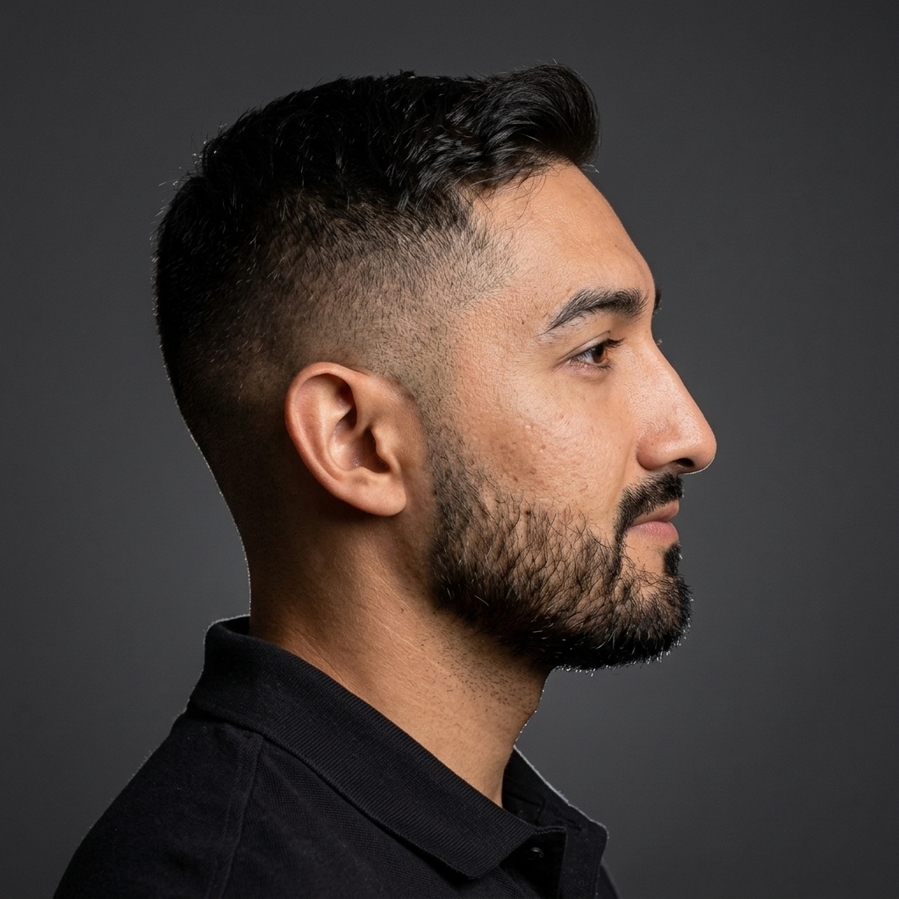
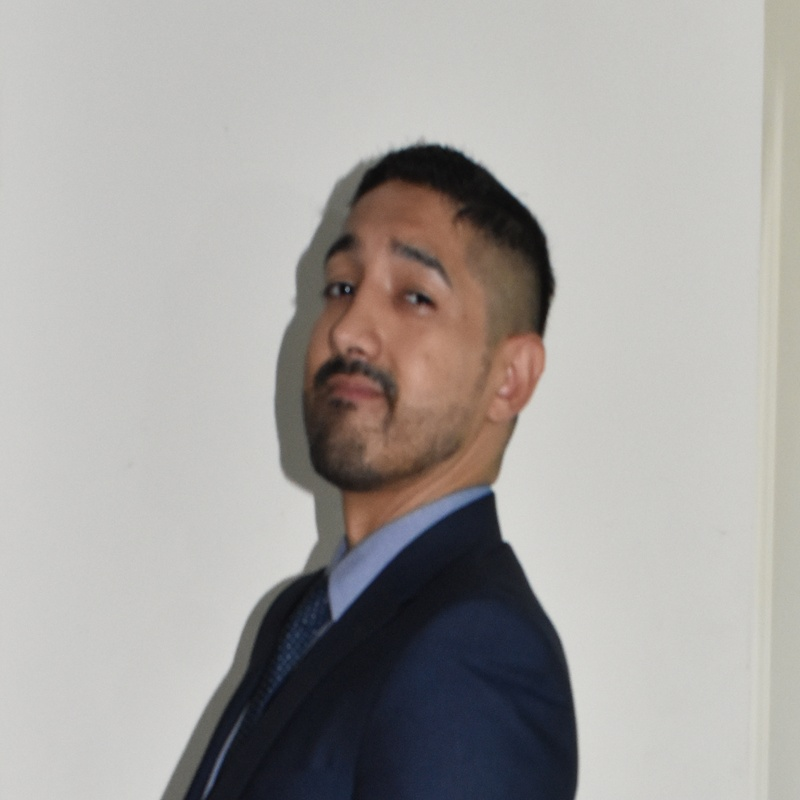
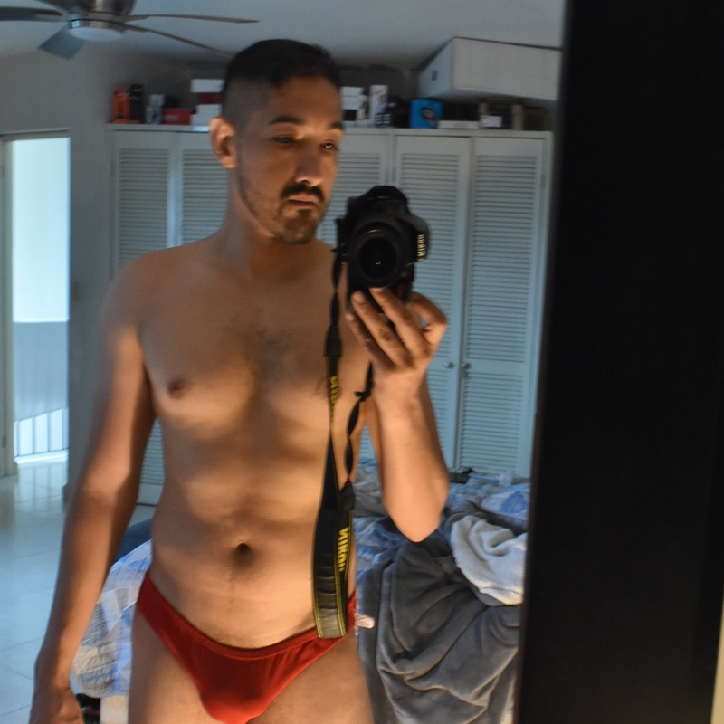

1. Frente Master Frente
Rostro frontal oficial con corte fade texturizado, barba perfilada completa y mirada seria reflexiva.
Uso: Anclaje facial primario y proporciones de ojos, cejas y frente.

2. Perfil Lateral 90° APROBADO POR CHUY
Opción 1 de estudio en 90° aprobada en su totalidad. Silueta nasal recta, sutil y elegante de la rinoplastia de 2011, corte fade y polo negro.
Candado Oficial: Cero curvatura aguileña, cero volumen excesivo ("sin Condorito").
3. Sonrisa Real Dientes Frontales
Sonrisa franca y amplia de la sesión DSLR (DSC_0057) con los dientes frontales superiores claramente visibles.
Candado: Prohíbe muecas con dientes escondidos o sonrisas falsas.

4. Perfil Tres Cuartos 3/4 Derecho
Ángulo 3/4 intermedio de la sesión DSLR (DSC_0092). Define la línea de mandíbula y pómulos en perspectiva.
Uso: Transiciones fluidas entre tomas frontales y de perfil.

5. Complexión y Físico Cuerpo
Proporciones anatómicas reales de hombros, cuello y torso atlético de la sesión DSLR (DSC_0001).
Candado: Mantiene la postura y el volumen corporal consistente.